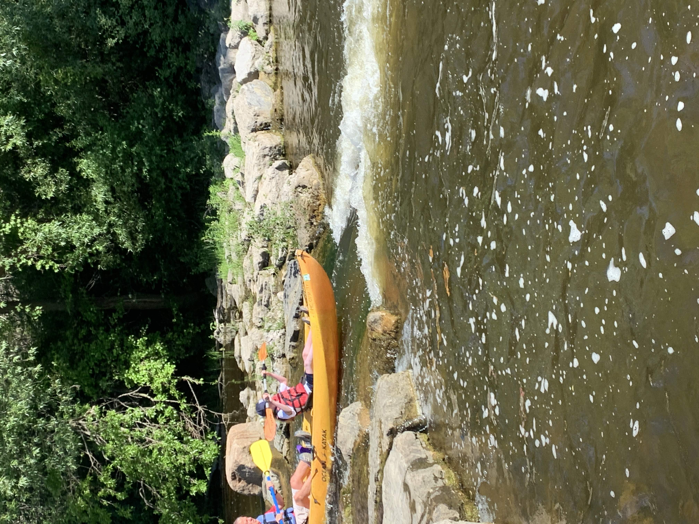
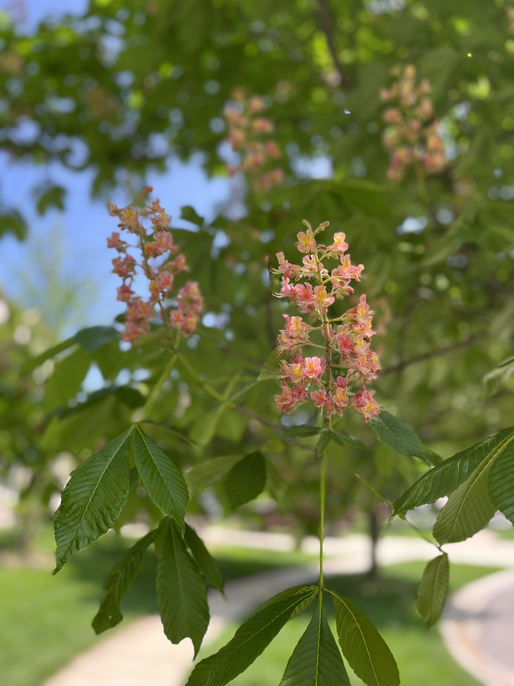

CSS3 & Layout
CSS3 & Layout
Explore Nature Multi-Page Site
A three-page showcase featuring focusable skip-links, Box Model image frames, two-column CSS Grid, Flexbox galleries, and nth-child selectors.
Use the interactive filter buttons below (Extra #2: JavaScript Category Filter) to sort my completed web applications by technology.
CSS3 & Layout
A three-page showcase featuring focusable skip-links, Box Model image frames, two-column CSS Grid, Flexbox galleries, and nth-child selectors.

JavaScript DOMDynamic gallery supporting mouse hover and keyboard Tab focus events, automatically injecting tabindex attributes via an onload loop.

Responsive DesignMobile-first responsive grid adapting at 772px and 992px while respecting prefers-reduced-motion and prefers-color-scheme: dark.